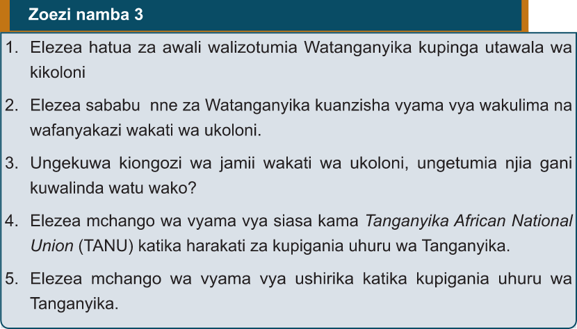

Zoezi namba 3

1. Elezea hatua za awali walizotumia Watanganyika kupinga utawala wa kikoloni
2. Elezea sababu nne za Watanganyika kuanzisha vyama vya wakulima na wafanyakazi wakati wa ukoloni.
3. Ungekuwa kiongozi wa jamii wakati wa ukoloni, ungetumia njia gani kuwalinda watu wako?
4. Elezea mchango wa vyama vya siasa kama Tanganyika African National Union (TANU) katika harakati za kupigania uhuru wa Tanganyika.
5. Elezea mchango wa vyama vya ushirika katika kupigania uhuru wa Tanganyika.